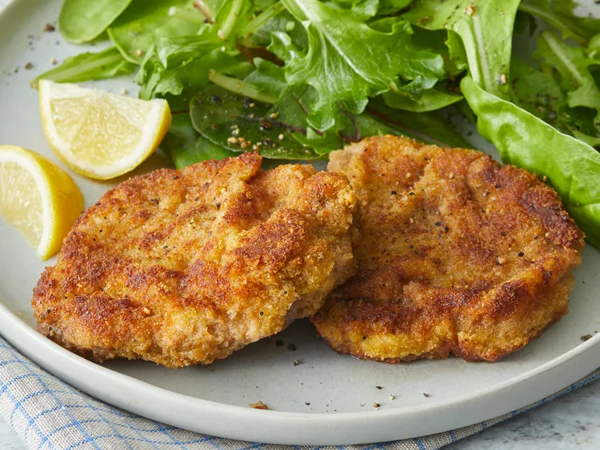

Wiener Schnitzel

Description
A simple dish, meat in patter.
Ingredients
- Veal cutlets, 1.5 pounds
- all-purpose Flour, 0.5 cups
- larg Eggs, 2
- grated Parmesan, 3 tablespoons
- Milk, 2 tablespoons
- minced Parsley, 1 teaspoon
- Salt, 0.5 teaspoons
- Pepper, 0.25 teaspoons
- ground Nutmeg, 1 pinch
- dry Bread Crumbs, 1 cup
- Butter, 6 tablespoons
- Lemon, 4 slices
Steps
- Place veal cutlets between 2 sheets of heavy plastic on a solid, level surface. Firmly pound cutlets with the smooth side of a meat mallet to a 1/4-inch thickness. Dip cutlets in flour to coat; shake off excess.
- Beat together eggs, Parmesan cheese, milk, parsley, salt, pepper, and nutmeg in a shallow bowl until combined. Place bread crumbs on a plate. Dip each cutlet into the egg mixture, then press in bread crumbs to coat. Place coated cutlets on a plate and refrigerate for 1 hour to overnight.
- Melt butter in a large skillet over medium heat. Cook breaded cutlets in butter until browned, about 3 minutes per side. Transfer cutlets to a serving platter and pour pan juices over them. Garnish with lemon slices.
Main Page Top